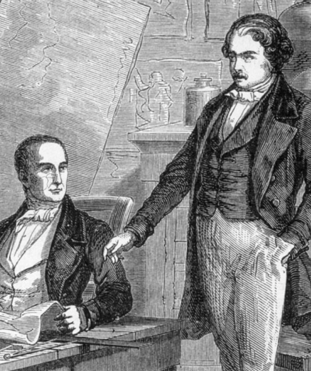
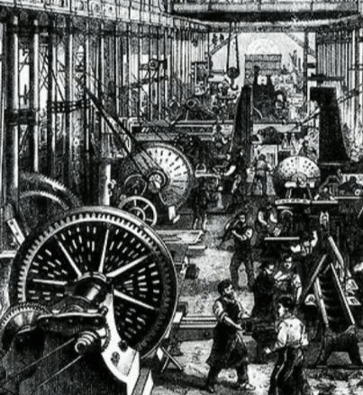
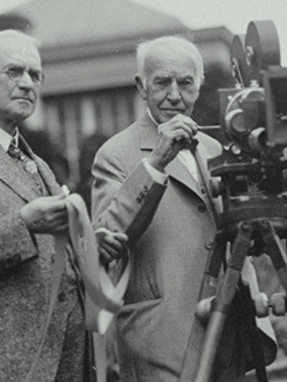
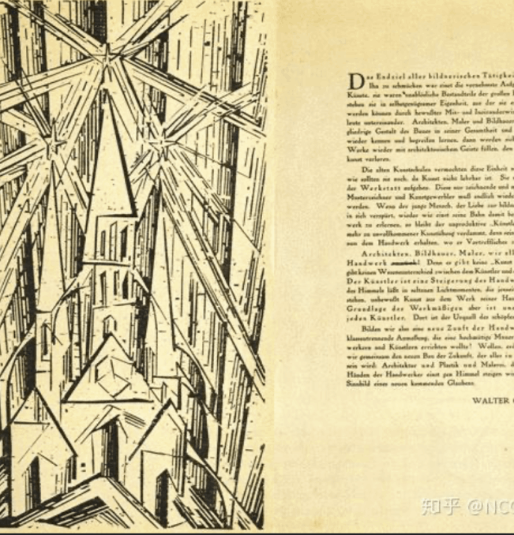
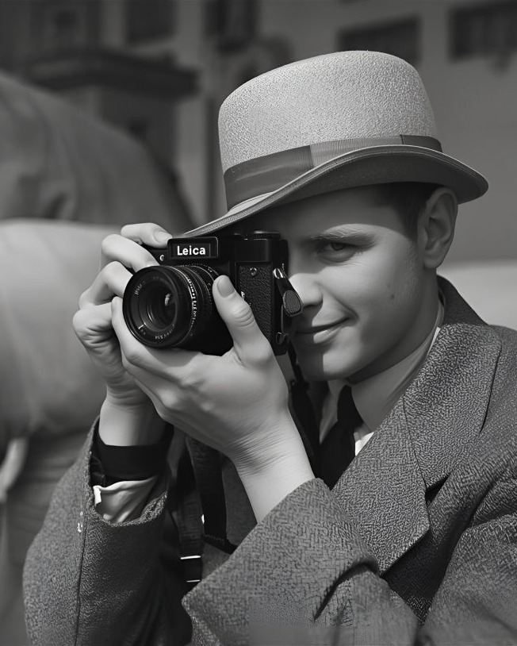
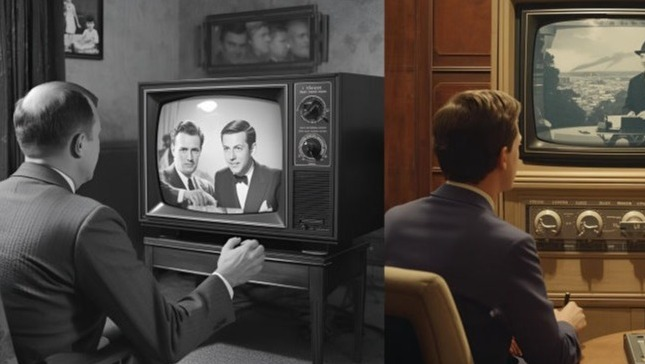

Website Builder Software
Photographers have a longer history, dating back to the 19th century, documenting the world.
Ad designers emerged with modern advertising, using images , text, and layout to persuade and sell.
A seminal development occurred in the 15th century with Johannes Gutenberg's introduction of the mechanical movable-type printing press. This technology revolutionized the spread of information, marking the dawn of mass communication.
For the first time, it allowed for the efficient and standardized replication of both text and simple graphics, thereby laying the foundational groundwork for the future discipline and practice of graphic advertising design.
15世纪： 古登堡印刷术的发明,为大众传播和平面广告的设计奠定了基础共同点
A pivotal moment in visual history occurred in the early 19th century with Louis Daguerre's 1839 public revelation of his photographic process. This event marked the practical genesis of photography, introducing a revolutionary ability to capture and fix a realistic image from life.
The resulting daguerreotypes, while stunningly detailed, were characterized by two defining traits of early photography: they were monochromatic (black-and-white), and their creation involved an intricate, multi-step chemical ritual. This complexity meant that photography began not as an art for the masses, but as a specialized and technically daunting endeavor.
19世纪初： 达盖尔在1839年公开了摄影术，标志着摄影的诞生。早期摄影是黑白的，且工艺复杂。

With the Industrial Revolution driving urbanization and literacy, the 18th and 19th centuries saw the formation of a recognizably modern advertising industry. Newspapers and magazines served as its essential vehicles.
The advertising design of this era was fundamentally print-based, characterized by two key elements: the strategic use of text typography in various fonts and sizes to create hierarchy and impact, and the incorporation of detailed illustrations—from simple woodcuts to more complex engravings—to visualize products and attract the eyes of readers in a crowded page.
18-19世纪： 工业革命催生了现代广告业，报纸和杂志成为主要载体，广告设计主要以文字排版和插画为主。

At the turn of the 20th century, photography underwent mass popularization, largely credited to George Eastman and his Kodak Company. The pivotal product was the Brownie camera, which was not only exceptionally easy to use but also sold for just one dollar. Marketed with the famous promise, "You press the button, we do the rest," it invited everyone, including children,to become photographers.
By simplifying the entire photographic process from capture to print,Kodak and the Brownie successfully transformed a specialized technology into a ubiquitous tool for personal documentation and creativity,bringing photography to the masses.
19世纪末-20世纪初： 乔治·伊斯曼创立柯达公司，推出了“你只需按快门，剩下的交给我们”的布朗尼相机，使摄影走向大众化

The early 20th century witnessed a dramatic transformation in advertising design, driven by two major artistic forces. First, the "Art Nouveau" movement brought organic, flowing lines, intricate floral motifs, and elegant typography to posters and ads, infusing them with a sense of stylized beauty. Later, the modernist philosophy of Germany's "Bauhaus" school presented a radical counterpoint.
It championed a "form follows function" approach, advocating for asymmetric yet balanced layouts, clean sans-serif typography, and a reduced visual composition based on geometric shapes. Together, these movements profoundly reshaped advertising, moving it from ornate decoration towards a more structured, expressive, and modern visual communication.
20世纪初： “新艺术运动”和后来的“包豪斯”现代主义设计理念，深刻影响了广告的版式、字体和视觉构成。

The period between the 1920s and 1950s was defined by two transformative technological shifts in photography. First, the popularization of the handheld Leica 35mm camera revolutionized capture. Its portability and fast operation enabled spontaneous "snapshot" photography and became the cornerstone of modern photojournalism, allowing reporters to document events as they unfolded.
Second, the long-awaited maturation and commercial rollout of color film technology added a new dimension to the medium. While black-and-white remained the standard for news, color opened fresh creative and commercial possibilities, gradually shifting visual culture towards a more realistic and vibrant representation.
20世纪20-50年代： 徕卡35mm相机的普及推动了快拍摄影和新闻纪实摄影。同时，彩色胶片技术逐渐成熟并商业化

The mid-20th century witnessed a paradigm shift in advertising driven by the proliferation of television. This powerful medium introduced a visual and dynamic form of marketing that reached directly into homes. It forced the entire industry to evolve, placing unprecedented demands on creativity and narrative craftsmanship.
Advertising design was no longer just about clever layouts and slogans; it became an exercise in filmmaking, requiring the ability to conceptualize, script, and produce short stories that could entertain, engage, and persuade, thereby elevating the role of the advertiser to that of a storyteller.
20世纪中期： 电视的出现带来了视觉动态广告，对广告设计的创意和叙事能力提出了更高要求

A profound transition began in the late 20th century as digital photography started to develop. This movement marked a historic shift from chemistry to computation.
The traditional process—based on chemical reactions on light-sensitive film and paper—was increasingly rivaled by a new method that captured light as digital data on an electronic sensor.
This transformation redefined every step: image capture was now instantaneous and reviewable, post-processing migrated from the darkroom to the computer screen using software like Photoshop, and sharing photos became possible without ever making a physical print. The very essence of photography was being rewritten.
20世纪后期： 数码摄影技术开始发展，改变了图像从拍摄到处理的整个流程
The period from the late 20th century to the present witnessed a complete overhaul of the advertising designer's toolkit. The introduction of desktop publishing and powerful software such as Photoshop and Illustrator marked a clean break from manual, time-consuming techniques.Tasks that once required precise physical cutting, pasting, and typesetting could now be executed and revised with clicks and keystrokes.
This digital revolution did more than just speed up the workflow; it liberated creativity, enabling rapid experimentation and the seamless integration of photography, illustration, and type. It was this transformation that paved the way for the interactive, multi-format advertising demands of the digital age.
20世纪末至今： 桌面出版和数字技术（Photoshop, Illustrator等软件）彻底改变了广告设计的工作流程，使其进入数字与互动时代。
From the 21st century to the present, photography has evolved from a specialized skill into a fundamental form of global literacy. The dual engine of ubiquitous smartphone cameras and high-quality digital imaging has democratized the creation of visual content.
Simultaneously, the architecture of social media has elevated images to the forefront of daily communication. In this new ecosystem, the ability to create, share, and interpret photographs is not just a hobby but a core social skill, making visual narrative more immediate and pervasive than ever before in human history.
21世纪至今： 智能手机与高像素数码相机的普及，使摄影成为全民化的视觉语言。社交媒体的兴起，更强调了摄影在传播中的核心地位
Website Builder Software